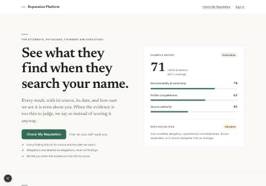
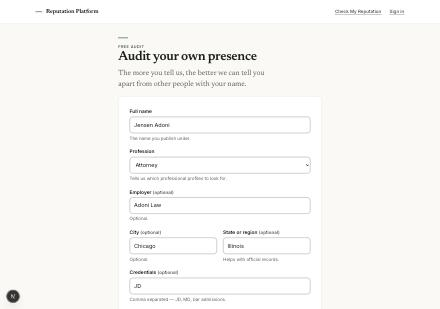
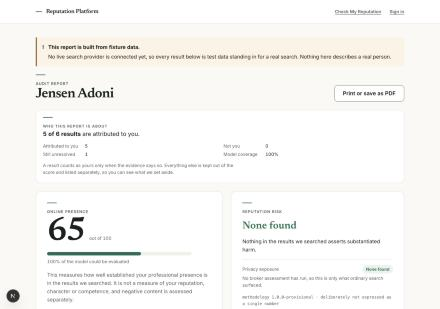
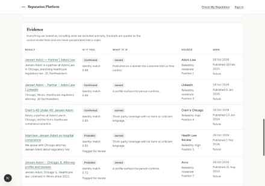
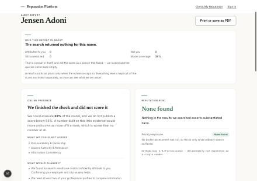
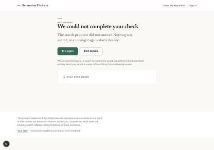
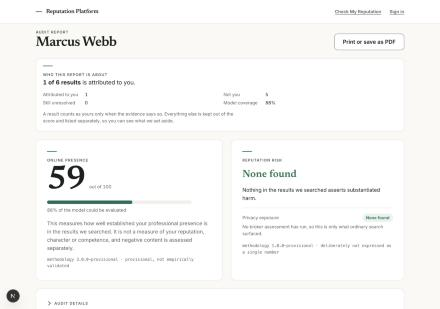
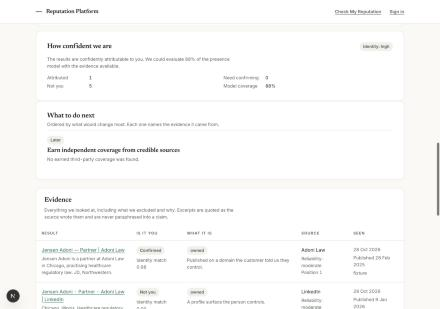
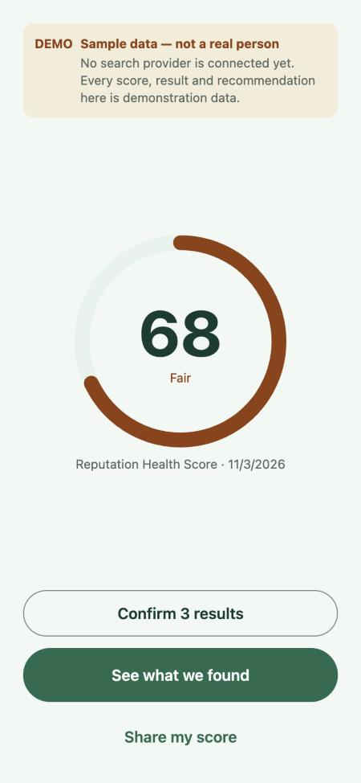

Status report, not a launch
What is built, what is not, and the one thing that would break the demo.
The core reputation-check journey runs end to end. No live search provider is connected, so every result on this page comes from fixture data. One defect would embarrass the product in front of an audience, and it is named below.
How this was checked
Every claim here was produced by running the application, not by reading it. The commands and their real output:
npm test → 269 pass, 0 fail
domain 104 · persistence 143 · website 22
npm run typecheck → clean
npm run dev → :4300, journey exercised in a browser
The Expo app was built separately with npx expo export --platform web,
which exited 0, and tsc --noEmit, which was clean.
Feature status
Four states, kept apart on purpose: verified means it was exercised just now, not that the code exists.
| Feature | Status | Note |
|---|---|---|
| Home screen | Verified | — |
| Reputation-check action | Verified | — |
| Name input form | Verified | Seven fields, validation, attestation |
| Audit execution | Verified | Queued job, polled; about 2s on fixtures |
| Online Presence Score | Verified | Six weighted dimensions |
| Reputation risk | Verified | Reported separately, no aggregate number |
| Evidence and source links | Verified | URL, source, reliability, date, position |
| Recommendations | Verified | Ordered; each names its evidence |
| Results screen | Verified | Including print and PDF |
| Loading states | Verified | Queries shown live, retry counter |
| Error states | Verified | A failure now offers Try again and Edit details |
| Insufficient evidence | Verified | Reads as a finished check, not a blank |
| Anonymous flow | Verified | — |
| Sign-in and account claiming | Verified | An earlier audit follows you into the account |
| Identity confidence | Partial | Works, but mis-bands. See the defect |
| Search provider | Fixture only | No credentials exist |
| Email delivery | Not built | Codes appear on screen in development |
| iOS / Android execution | Not this product | See below |
Live search is not configured
A fixture provider returns hard-coded rows. There are no provider credentials in the repository and no code path that would use them. The provider has not been chosen yet.
The application says so in three places rather than one: a banner above every
report, an isFixture: true flag on each stored record, and a
selector labelled Demonstration scenario. The flag lives in the data
rather than only in the interface, because a banner is lost the moment someone
screenshots a report.
The journey, as it runs
Home, then the name form, then a report. Captured from the running application. Every score shown is computed from fixture data about a fictional attorney.




The honest failure states work
These matter more than the happy path, because they are what stops the product inventing a number when it does not have one.


The defect
Entering a different name returned a report headed with that name, an Online Presence score of 59 out of 100, 88% model coverage, and an identity confidence band of high — above the words “the results are confidently attributable to you”. Every one of the eight results was about somebody else.


The cause is a single filter in the confidence engine:
const named = records.filter((r) => r.identityConfidence > 0);
The comment four lines above it says the average is taken over every result
bearing the person’s name, including the ones we rejected,
because the rejections are exactly what should make the answer uncertain. It
is not: > 0 drops the rejected results, which score zero. One
self-claimed URL at 0.98 therefore averages to 0.98, and the band reads
high.
The filter cannot tell no name here from a name, and it is not yours. The project’s own rule 11 — a name match is not an identity match — is the rule this breaks.
The fix is not to make the fixture follow the name
The tempting repair is to substitute whatever name is typed into the fixture rows, so a demonstration always looks good. That would manufacture findings, sources and credentials about a real person, which is the one thing the product forbids outright. The correct repair is the opposite: when the subject does not match what the evidence is about, decline to produce a score and say why.
The mobile app is a different product
An Expo app exists and builds. It is not a client for this engine, and demonstrating on it would show invented numbers from an earlier product aimed at a different audience.
- It runs entirely on a local mock module. It has never called the audit engine.
- Its API base points at a host that does not exist.
- It produces a single aggregate “Reputation Health Score”. This product deliberately reports three separate outputs with no aggregate.
- Its screens — brokers, disputes, removals, paywall — belong to the consumer product, which is paused.

To its credit, it says so on every screen that shows a number. That labelling is why it is honest and still not demonstrable.
What to do next
In order. None of these is a refactor, and nothing else on the MVP list is outstanding.
Stop scoring a subject the evidence is not about
Fix the confidence filter so rejected results count against the band, and refuse to render a score when a fixture run’s subject does not match the fixture subject. One filter and one branch.
Make the demonstration path deliberate
The form currently pre-fills a fictional attorney as a default. Present that subject as the demonstration subject instead, so the boundary of the fixture data is visible rather than something a viewer discovers by typing their own name.
Clear the second-name block for a demonstration
A second distinct name is refused until an email address is verified. That is correct behaviour — it is what stops the product being a people-search engine — but with no mail provider connected it stops a live walkthrough. Pre-verify the session, or raise the limit for the demo only.
What changed since this was written
The page is dated, so it has to say what is no longer true of it. Screenshots 1 to 7b
were retaken on 4 November against commit 7ad4d03.
The report now opens with who it is about rather than how the search was run; the
provenance moved into a collapsed Audit details that still prints. The
evidence table leads with identity and the bare 0.98 is labelled as an
identity match. A failed search offers Try again and Edit details
instead of a dead end. The insufficient-evidence state reads as a completed check
with a limited conclusion. The home page gained three steps and a closing ask.
The identity-confidence defect below is unchanged. The band still reads high off a single self-claimed result, and a subject the fixtures do not cover is still scored. The report no longer hides the contradiction — screenshot 7 shows “1 of 6 results is attributed to you” directly above a 59 — but showing a problem is not fixing it.
Three alternative design directions for the report are rendered on the same data at /directions, for comparison rather than description. They are compositions, not a built product.
Feedback
Corrections are more useful than agreement. If something here reads as overstated, or a status is wrong, say so.